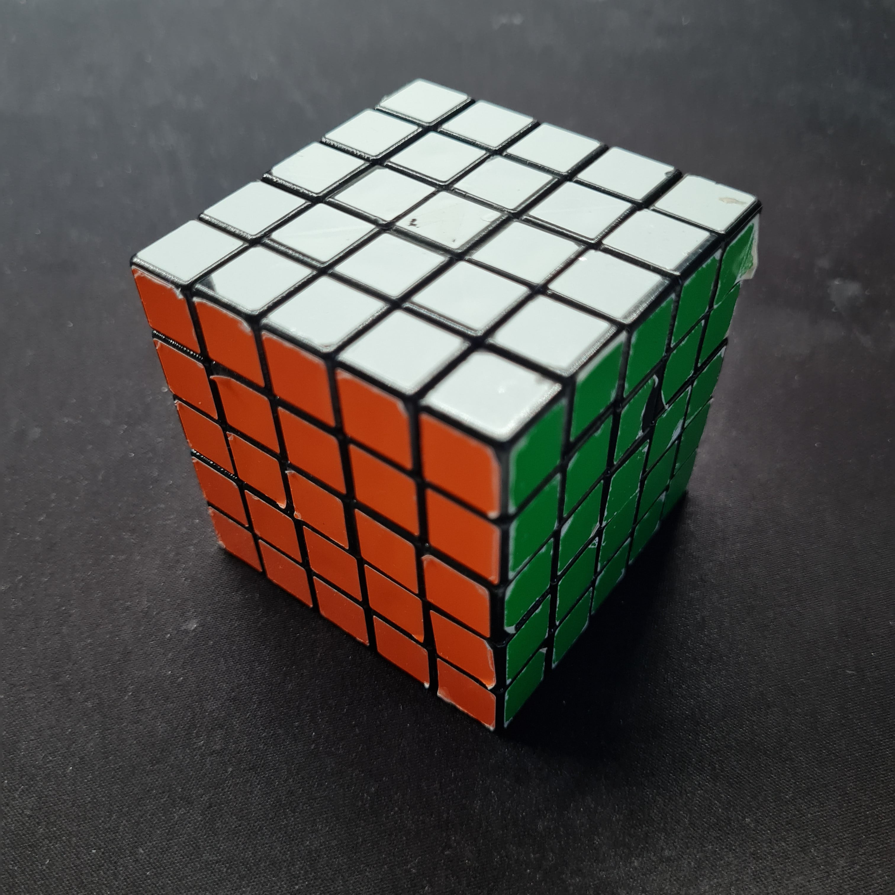
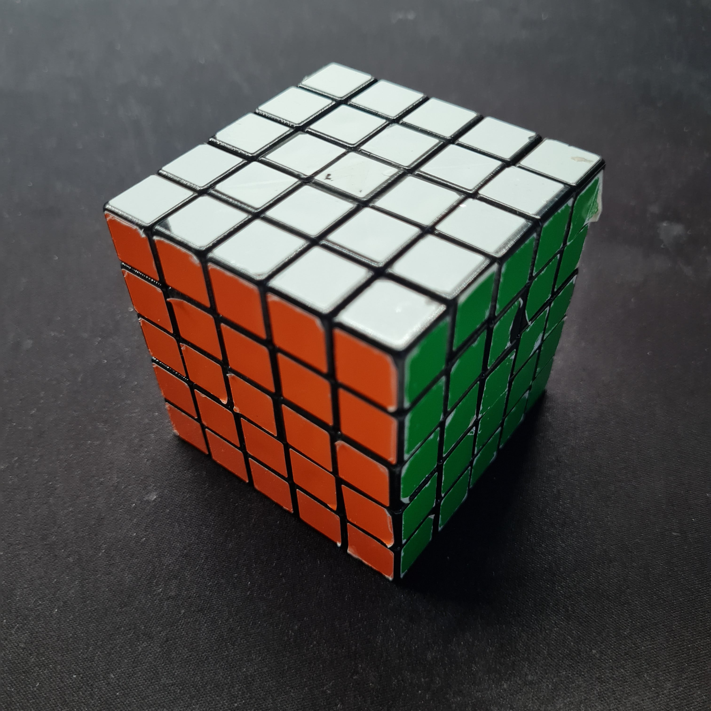

A Klasszikus 3x3 Kocka
Az eredeti 3x3 Rubik kocka az a játék, amely forradalmasította a logikai játékok világát. Könnyen tanulható, de nehezen mesterré válható. Az egyszerűnek tűnő mechanizmus mögött 43 kvintillió különböző elrendezés rejlik.

Egyéb Méretek és Típusok
- 2x2 Mini Kocka: Ideális kezdők számára, akik most ismerkednek a Rubik kockák világával.
- 4x4 Mesterkocka: Továbbfejlesztett változat haladó játékosoknak, még összetettebb logikai kihívásokkal.
- 5x5 Professzionális Kocka: A kihívás szerelmeseinek, akik a legbonyolultabb feladványokat keresik.

 

Érdekességek
- A legnagyobb Rubik kocka, amelyet valaha készítettek, 17x17-es méretű.
- A 2x2-es kockát gyakran "zsebkockának" nevezik kompakt mérete miatt.
- A 3x3 Rubik kocka világrekordját jelenleg 3,13 másodperc tartja.